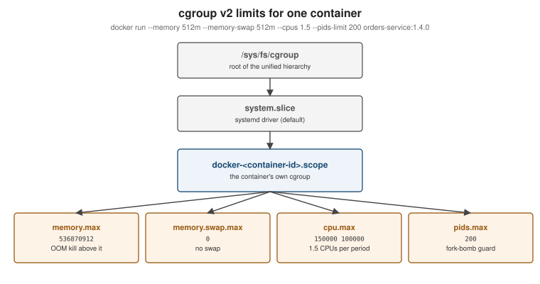

Resources, Logging and Monitoring
|
This content was generated with the assistance of AI and should be verified against the official documentation before being relied on in production. |
A container with no limits can use every CPU cycle and byte of memory on its host, and a container with no log
rotation can fill the disk. This page covers the three operational concerns that follow from that — resource
limits, logging and monitoring — as implemented by Docker Engine 29.8.x on cgroup v2, and what they mean for a
Java 25 application. Both 2015 books cover cgroup quotas and docker stats; logging drivers, cgroup v2 and JVM
container awareness are newer.
See also Monitoring & Alerting for building dashboards and alerts from container metrics and logs.
Resource limits
Limits are enforced by the kernel’s control groups. On cgroup v2 hosts (every current distribution, and Docker Desktop) each container gets its own cgroup under the Docker slice:

| Option | Effect |
|---|---|
|
Hard memory limit. Exceeding it triggers the kernel OOM killer inside the container’s cgroup. |
|
Memory plus swap. Equal to |
|
A soft limit applied when the host is under memory pressure. |
|
At most 1.5 CPUs' worth of time per scheduling period (a CFS quota). |
|
Pin the container to specific CPUs. |
|
Relative weight when CPUs are contended (default 1024). |
|
Maximum number of processes/threads — a fork-bomb guard. |
|
Per-process resource limits such as open files. |
|
Expose GPUs (requires the NVIDIA Container Toolkit or a CDI-capable runtime). |
docker run -d --name orders --memory 512m --memory-swap 512m --cpus 1.5 --pids-limit 200 orders-service:1.4.0
docker stats --no-stream orders
docker inspect --format '{{.HostConfig.Memory}} {{.HostConfig.NanoCpus}}' orders
docker update --cpus 2 orders # limits can be changed on a running containerDerived from Resource constraints and
GPU access. cgroup v1 is deprecated in Engine 29 (supported until at
least May 2029); docker info shows Cgroup Version: 2 on a current host.
Out-of-memory behaviour
When a container exceeds --memory, the kernel kills a process in that cgroup — usually the main process — and
the container exits with code 137. docker inspect --format '{{.State.OOMKilled}}' tells you whether that was
the reason. Without a limit, a leaking container competes with the host itself; Docker lowers the daemon’s own OOM
score so the kernel prefers killing a container over dockerd. Never use --oom-kill-disable without a memory
limit.
What the JVM sees
Since JDK 10 the JVM is container-aware (-XX:+UseContainerSupport, on by default): it reads the cgroup limits
and sizes itself from them, not from the host.
-
Heap: by default the maximum heap is 25% of the container’s memory limit — conservative for a container that runs nothing but the JVM. Set
-XX:MaxRAMPercentage=75(a common starting point) rather than a fixed-Xmx, so the heap follows the limit; leave room for metaspace, thread stacks, direct buffers and the code cache. -
CPUs:
Runtime.availableProcessors()reflects--cpus(rounded up) and--cpuset-cpus; GC andForkJoinPoolthreads are sized from it.-XX:ActiveProcessorCount=<n>overrides the detected value. -
Check it:
java -XshowSettings:system -versionprints what the JVM detected.
docker run --rm --memory 1g --cpus 2 eclipse-temurin:25-jre \
java -XX:MaxRAMPercentage=75 -XshowSettings:system -XX:+PrintFlagsFinal -version 2>&1 \
| grep -E 'Memory Limit|CPU Count|MaxHeapSize|ActiveProcessorCount'-XshowSettings and -version write to standard error, so 2>&1 merges it into the pipe; the pipe and grep run
on the host, reading the container’s output streamed back by docker run.
Derived from the java launcher reference for
Java 25 (-XX:MaxRAMPercentage, -XX:ActiveProcessorCount, -XX:+UseContainerSupport). Spring Boot images built
with Cloud Native Buildpacks compute these settings automatically (see
Java and Spring Boot Images).
Logging
The contract is simple: write logs to stdout and stderr. Docker captures both streams from the container’s main
process and hands them to a logging driver; docker logs reads them back.
writes to stdout / stderr"] --> shim["containerd shim
captures the streams"] shim --> drv{"Logging driver"} drv -->|json-file / local| file["Log files on the host
(rotated)"] drv -->|journald / syslog| sys["Host log system"] drv -->|fluentd / gelf / awslogs / splunk| remote["Central log platform"] drv -.->|dual logging cache| cache["Local cache
so docker logs still works"] file --> cli["docker logs"] cache --> cli
| Driver | Notes |
|---|---|
|
One JSON object per line under |
|
Compact, compressed files with rotation on by default; Docker’s recommended driver for local logs. |
|
Send to the host’s log system. |
|
Ship directly to a log platform. |
Configure the default for the daemon in /etc/docker/daemon.json (then restart the daemon; it applies to new
containers only):
{
"log-driver": "local",
"log-opts": {
"max-size": "10m",
"max-file": "5"
}
}docker run -d --log-driver json-file --log-opt max-size=10m --log-opt max-file=3 orders-service:1.4.0
docker logs --tail 100 -f --timestamps orders
docker inspect --format '{{.HostConfig.LogConfig.Type}}' ordersDerived from View container logs and
Configure logging drivers. With a remote driver, dual logging
keeps a local cache so docker logs still works (see Dual
logging). For a Spring Boot service, keep console logging on (structured JSON with
logging.structured.format.console=ecs or logstash) and let the platform ship it.
Monitoring
docker stats # live CPU, memory (usage / limit), network and block I/O
docker stats --no-stream --format 'table {{.Name}}\t{{.CPUPerc}}\t{{.MemUsage}}'
docker events --since 1h --filter type=container --filter event=die # lifecycle events: start, die, oom, health_status
docker system df -v # disk used by images, containers, volumes and build cache
docker ps --filter health=unhealthy # health states from HEALTHCHECK: starting, healthy, unhealthyDerived from docker container stats,
docker system events,
docker system df and
Runtime metrics (which also explains reading cgroup
statistics directly).
Prometheus metrics from the daemon
dockerd can expose its own metrics (engine, builder, container actions) in Prometheus format:
{
"metrics-addr": "127.0.0.1:9323"
}# prometheus.yml (Docker Desktop)
scrape_configs:
- job_name: docker-engine
static_configs:
- targets: ["host.docker.internal:9323"]host.docker.internal:9323 only works on Docker Desktop, where that name reaches the loopback-bound metrics
endpoint. On a Linux engine, --add-host host.docker.internal=host-gateway makes the name resolve to the bridge
gateway address, and nothing listens there while metrics-addr is 127.0.0.1:9323. On Linux, either run Prometheus
in the host’s network namespace and scrape localhost:9323, or set metrics-addr to the bridge gateway IP (for
example 172.17.0.1:9323) and keep host.docker.internal with --add-host:
# /tmp/prometheus.yml (Linux engine, Prometheus on the host network)
scrape_configs:
- job_name: docker-engine
static_configs:
- targets: ["localhost:9323"]docker run -d --name prometheus --network host \
--mount type=bind,source=/tmp/prometheus.yml,destination=/etc/prometheus/prometheus.yml \
prom/prometheus
curl -s http://localhost:9090/api/v1/targets | grep -o '"health":"[a-z]*"'Derived from Collect Docker metrics with Prometheus and Host network driver. These are daemon metrics; per-container CPU, memory and network metrics come from cAdvisor, which the Prometheus reference covers in Containers & Kubernetes monitoring. For the rest of the Prometheus and Grafana stack see the Prometheus reference.
Housekeeping with labels and pruning
Label containers, images and volumes (--label team=orders --label env=dev) so filters can find them, and prune
regularly:
docker ps -a --filter label=env=dev
docker system prune --filter label=env=dev --filter until=72h
docker image prune --all --filter until=168hDerived from Docker object labels and Prune unused Docker objects.